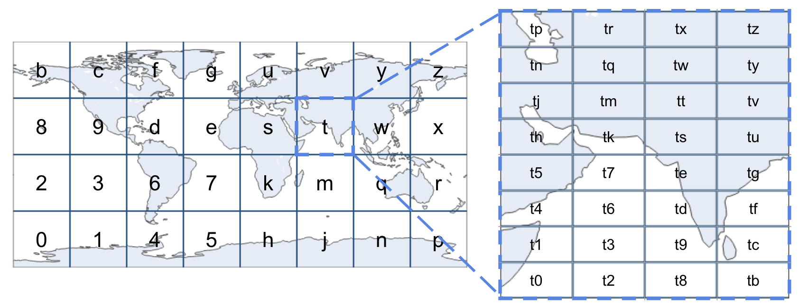

Introduction
Geoprox is a geospatial indexing and querying API designed to simplify and optimize location-based operations. It provides efficient methods for encoding and decoding geohashes, finding neighboring regions, and managing geospatial indexes for a variety of applications such as food delivery services and real-time inventory tracking.
Key Features:
- Geohash Encoding and Decoding: Convert geographic coordinates into geohashes and retrieve coordinates from geohashes for easy location-based operations.
- Neighbor Identification: Quickly find neighboring geohashes to support spatial queries and region-based operations.
- Geospatial Index Management: Create, update, and delete geospatial indexes to organize and query location-based data efficiently.
- Proximity Searches: Perform radius-based searches to locate nearby resources or inventory items.
Benefits:
- Efficient Spatial Data Handling: Streamline operations by leveraging geohashes for compact and hierarchical representation of locations.
- Flexible Querying: Use proximity-based queries to enhance real-time decision-making and operational efficiency.
- Easy Integration: Seamlessly integrate Geoprox with applications for real-time tracking, delivery services, and more.
Geoprox is particularly useful for scenarios that require real-time location tracking and efficient geospatial queries. It simplifies the process of managing and querying location-based data, making it ideal for applications like locating available e-bikes or finding nearby restaurants.
Contributing
Geoprox is an open-source project and welcomes contributions from the community. If you’d like to contribute, please visit the GitHub repository to find the source code, report issues, and submit feature requests. For detailed guidance on contributing, please refer to the CONTRIBUTING document.
License
Geoprox is licensed under the Apache 2.0 or MIT License (your choice).
How Geoprox Works
The Problem
Initially, for the May 2024 Rust Indy.rs meetup, the proof of concept problem began with ride-share pairing like Uber or Lyft.
Ride pairing depends on being able to track and pair a set of drivers within the vicinity of some location (i.e., the pickup location of an order).
Since then, the problem has generalized to how can we efficiently track and retrieve resources geographically near some location.
Requirements
- Keep track of the approximate location of objects.
- Search should return a set of objects within a radius of the search location.
Solution
We index the objects and hash their key and geographical position. Using a geohash to encode the approximate location, we can map geohash prefixes into the set of objects contained in the Geohash using a Prefix Tree stored in-memory.
We can efficiently partition the search space and perform a nearest neighbor search on a merged set of objects in the search region and return the results.
What is a Geohash?
A geohash is a string representation of a geographic location, encoded as a series of characters. This encoding allows for efficient storage and querying of spatial data. Geohashes are hierarchical, meaning that as the string length increases, the represented area becomes more precise.
How Geohashes Work

Geohashes divide the world into a grid of cells, each with a unique identifier (encoded in base32). The precision of the geohash can be adjusted by changing its length:
- Short geohashes represent larger areas.
- Long geohashes represent smaller, more precise areas.
| Geohash Length | Lat Bits | Lng Bits | Lat Error | Lng Error | Km Error |
|---|---|---|---|---|---|
| 1 | 2 | 3 | ±23 | ±23 | ±2,500 km (1,600 mi) |
| 2 | 5 | 5 | ±2.8 | ±5.6 | ±630 km (390 mi) |
| 3 | 7 | 8 | ±0.70 | ±0.70 | ±78 km (48 mi) |
| 4 | 10 | 10 | ±0.087 | ±0.18 | ±20 km (12 mi) |
| 5 | 12 | 13 | ±0.022 | ±0.022 | ±2.4 km (1.5 mi; 2,400 m) |
| 6 | 15 | 15 | ±0.0027 | ±0.0055 | ±0.61 km (0.38 mi; 610 m) |
| 7 | 17 | 18 | ±0.00068 | ±0.00068 | ±0.076 km (0.047 mi; 76 m) |
| 8 | 20 | 20 | ±0.000085 | ±0.00017 | ±0.019 km (0.012 mi; 19 m) |
For example, the following geohashes are all within a maximum distance of +/- 78km (48mi) from each other:
- s008nb00j8
- s00twy01mt
- s00j8n012j
However, these geohashes represent completely different regions:
- s128nb00j8
- s34twy01mt
- s56j8n012j
Benefits of Using Geohashes
- Compact Representation: Efficiently stores geographic coordinates.
- Hierarchical Structure: Allows for easy aggregation and precision adjustment.
- Proximity Queries: Simplifies the process of finding nearby locations.
Prefix Searching
What is Prefix Search?
Prefix search is a method for quickly finding all entries in a dataset that share a common prefix. In the context of geohashes, it allows us to retrieve all geohashes that start with the same characters, which is useful for geographical proximity searches.
Trie Tree
We can store Geohashes in a Trie Tree data structure. Tries enable us to efficiently retrieve geohashes with a common prefix in O(L) time, where L is the length of the prefix being searched.
Key Features of Trie Tree:
- Efficient Retrieval: Quickly find geohashes sharing a common prefix.
- Time Complexity:
O(L), whereLis the prefix length.
Patricia Trie Tree

A Patricia Trie Tree, also known as a Radix Tree, is a type of Trie Tree that optimizes space by merging common prefixes into single nodes. This further enhances the efficiency of prefix searching by reducing the number of nodes.
Key Features of Patricia Trie Tree:
- Space Optimization: Merges common prefixes to save space.
- Efficient Lookup: Retrieves geohashes with common prefixes efficiently.
- Time Complexity: Best case
O(log N)whereNis the length of the longest geohash stored, and worst caseO(L)whereLis the length of the prefix.
Comparisons
Skip List
A Skip List is a probabilistic data structure that allows for fast search, insertion, and deletion operations. It consists of multiple levels of linked lists, with each higher level acting as an "express lane" for elements lower down.
-
Pros:
- Efficient Average-case Performance: Provides good average-case performance for search operations, typically
O(log N)time complexity. - Cache-friendly: The contiguous arrangement of nodes makes Skip Lists more cache-friendly than tree-based structures.
- Efficient Average-case Performance: Provides good average-case performance for search operations, typically
-
Cons:
- Space Overhead: Requires additional space to maintain pointers for multiple levels, resulting in higher space usage compared to a Patricia Trie.
- Probability Calculations: Maintaining balance requires careful calculation of node levels' probabilities, involving some understanding of probability theory.
B-Trees and MemTables
B-Trees are balanced tree data structures that maintain sorted data and enable searches, sequential access, insertions, and deletions with logarithmic time complexity. MemTables are in-memory data structures used in conjunction with B-Trees to facilitate efficient storage and retrieval of key-value pairs before persisting data to disk.
-
Pros:
- Efficient Disk-based Storage: Ideal for managing large datasets and effective for disk-based storage solutions.
- Range Queries and Sorted Data Retrieval: Provides excellent performance for range queries and retrieving sorted data efficiently.
-
Cons:
- Memory Usage: MemTables require significant memory to store data before flushing to disk, which can be a limitation for very large datasets.
- Complexity in Merging: Managing and merging data between MemTables and disk-based storage can introduce complexity and overhead in maintaining data consistency.
Why Patricia Trie?
For geospatial data, where object locations might change frequently, in-memory solutions like Patricia Trie are preferred. They offer superior speed and efficiency in managing dynamic data, avoiding the latency associated with disk I/O operations.
Insertion and Query
This section outlines the fundamental design strategy behind Geoprox, detailing the algorithms used for inserting and querying geospatial data.
The core approach involves encoding geographic coordinates into geohashes, utilizing a Patricia Trie for efficient storage and retrieval, and employing a KD-Tree for fast nearest neighbor searches. These techniques collectively enable Geoprox to efficiently manage and query large volumes of geospatial data.
Data Structures
-
Approximate Rider Position Tracking:
- Utilize a
HashMap* see v0.3.0 release notes to track approximate rider positions. - Format:
object_key=>geohash(lat, lng)
- Utilize a
-
Key/Value Storage:
- Use
StringPatriciaMapfor efficient key/value storage. - Format:
geohash_region=>HashSet(object_key)
- Use
Insert Procedure
-
Hash Object's Latitude/Longitude:
- Hash the object's latitude and longitude up to a certain depth (e.g., 6). This depth, called
insert_depth, should be sufficient to ensure the resulting geohash region is large enough to store the density of objects in that area.
- Hash the object's latitude and longitude up to a certain depth (e.g., 6). This depth, called
-
Upsert Object Key:
- Insert or update the
object_keyin theStringPatriciaMapwith itsgeohash_region. - If
object_keyhad an existinggeohash_region, remove its entry from that region in theStringPatriciaMap.
- Insert or update the
Search Procedure
-
Initiate Search:
- A search is initiated at a specific location with a given search range (in kilometers).
-
Encode Latitude/Longitude:
- Encode the latitude and longitude into a geohash up to a specific depth (e.g., 6). This depth, called
search_depth, should ensure the geohash region is small enough to fit within the search radius.
- Encode the latitude and longitude into a geohash up to a specific depth (e.g., 6). This depth, called
-
Optimize Geohash Search Region:
- Optimize the geohash search region by expanding it until it covers the search area.
- If the geohash search region does not contain the search radius, remove the last character (effectively expanding the region) until it fits within the search area.
-
Partition
StringPatriciaMap:- Partition the
StringPatriciaMapby the common prefix of the optimized geohash.
- Partition the
-
Construct
KdTree:- Iterate over the partition and construct a
KdTree. - Store objects and their approximate locations in the
KdTree.
- Iterate over the partition and construct a
-
Compute Nearest Neighbor:
- Perform nearest neighbor computation with the search requirements against the
KdTreeto get the final result.
- Perform nearest neighbor computation with the search requirements against the